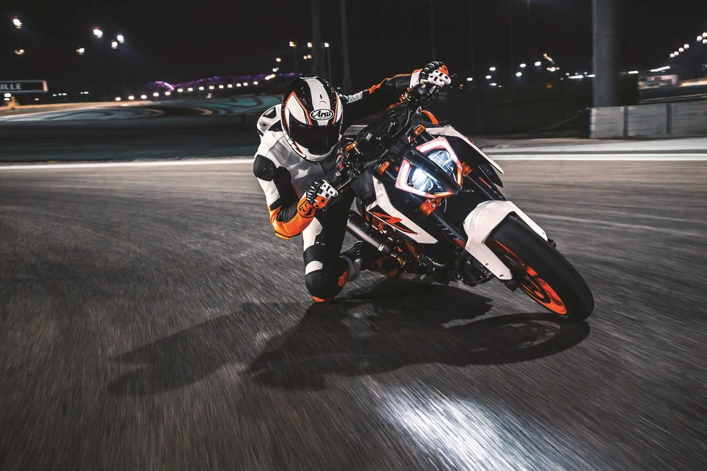
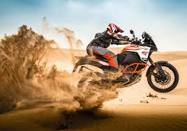

Generalmente las motos naked se construyen con un tanque más grande y más largo. Además, este tipo de motocicletas también tienen controles de pie más traseros para evitar que las estriberas raspen el pavimiento, especialmente durante las curvas. Generalmente tienen sus controles de pie colocados más en el centro con un manillar de elevación más alto. Por tanto, la ubicación del manillar como de los controles de pie afecta también a la postura del motorista, así como a la silueta general de la moto.

ADVENTURE
La KTM 390 ADVENTURE lleva la exploración más allá al fusionar la versatilidad offroad y la probada fiabilidad con unas prestaciones para el mundo real. Construida en torno a un compacto motor monocilíndrico de 373 cc, con una parte ciclo capaz y ligera y una electrónica líder en su clase, la KTM 390 ADVENTURE te anima a descubrir nuevas fronteras con la inigualable capacidad y emoción que esperas de una KTM ADVENTURE. Con un diseño actualizado para 2022

SUPERSPORT
La KTM RC 8C es un arma ultraligera de circuito diseñada con un simple propósito: destrozar los tiempos por vuelta y demostrar la autoridad naranja en la parrilla de salida. Con una producción de tan sólo 100 unidades de estas exclusivas armas, la KTM RC 8C es una motocicleta única y muy limitada, dirigida a un tipo especial de piloto que sabe cómo dar el máximo.
ENDURO
Todas las máquinas de 2 tiempos de KTM son el fruto del trabajo de un departamento de investigación y desarrollo dedicado a mantener cada modelo a la vanguardia de la jerarquía de la competición de enduro. En el nivel de entrada de la gama KTM EXC 2023 se encuentra la KTM 150 EXC, ágil, ligera y plenamente preparada para la competición. En mitad del grupo, la KTM 250 EXC se presenta como la máquina de velocidad absoluta, y la legendaria KTM 300 EXC ocupa el escalón más alto de un podio en el que todos los modelos se benefician de los desarrollos tecnológicos más avanzados del segmento. s